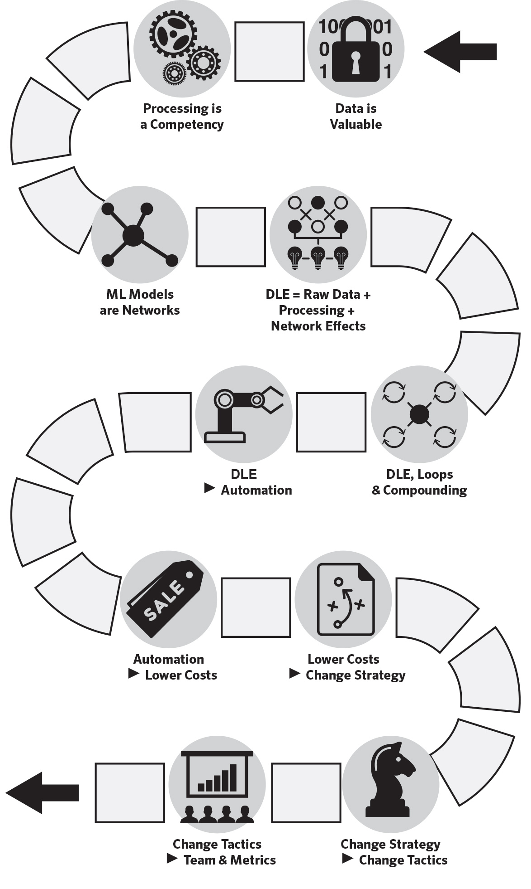

I do stuff for creators, corporates and the curious.
Welcome. I'm Ash Fontana, a person living on the planet (often found at the top of mountains). Personally, I'm interested in intelligent systems, italian culture and investing. Professionally, I'm trying to bring about a world where everyone works for themselves. I launched AngelList's fundraising platform (the biggest in the world that now manages over $7B), Zetta Venture Partners (the first investment fund that focused on AI that manages $385MM) and a few of my own companies. I've been the first or lead investor in category-defining companies such as Canva, Kaggle and Tractable. Penguin Random House just published my first book, The AI-First Company, about how to develop a competitive advantage using AI.
Creators
I help companies from their earliest stages build data learning effects. I do that by advising on their data strategy, and investing behind that strategy. The advisory work typically takes the form of one working session per month in which we try to solve your hardest problem. I can invest anywhere from $10K to $10MM in a company.
“...whether you’re launching a start-up or integrating emerging technologies into your existing company, Ash Fontana provides not only a comprehensive framework for understanding AI, but also practical advice for developing an ‘AI-First’ mindset.”— ERIC SCHMIDT, former executive chair and CEO of Google and cofounder of Schmidt Futures
“Ash Fontana thinks about building companies in a really unique way. His ideas helped companies like ours get started, and now they’re in a book for you to use too.”— MELANIE PERKINS, cofounder and CEO of Canva
The Data Learning Effects Journey
Corporates
I help some of the largest companies and governments in the world understand the potential applications and impact of AI. This takes the form of board, consulting and speaking engagements. I tend to focus on applying the following, key frameworks. You can book an introductory call here. My rate is $1,100 per hour but it various depending on the length, type and impact of the engagement.
Strategy
What creates a competitive advantage?
Chapter 1: Defining Data Learning Effects
- Intelligence is determined by how fast you learn, and you’ll learn faster using machines.
- The automatic compounding of information is a data learning effect.
- Data learning effects = economies of scale to data + data processing capabilities + data network effects.
- Data learning effects compound faster than any other form of competitive advantage.
- Data network effects are where each incremental data point adds more information to a user of the network than the last data point.
Tactics
Where do I start?
Chapter 2: Lean AI
- Anyone, at any company, can start building AI.
- Lean AI is a process to build an AI-First product.
Capital
How do I allocate resources?
Chapter 3: Getting the data
Chapter 4: AI-First Teams
Chapter 5: Making the Models
- The most significant source of data for AI-First companies is from the customers they’re serving.
- Data coalitions create a unique data asset for both vendors and customers.
- AI-First companies need a diverse group of people to manage different technologies.
- AI-First companies embed AI-First teams everywhere.
Metrics
What should happen?
Chapter 6: Managing the Models
Chapter 7: Measuring the Loop
- The world is always changing, so your models will too.
- Model management is not code management.
- The goal of tracking every version of a model is reproducibility.
- The motion of a data learning effect is looping.
- Data learning effects automatically generate assets, capabilities, and information.
- Companies need new methods to properly account for the cost of delivering an AI-First product.
More
What’s the second act?
Chapter 8: Aggregating Advantages
- Vertical integration gets more data, revenue, and profit.
- Aggregating data creates new products.
- Strategic data management can lead to customer lock-in.
- Increase compatibility or create an ecosystem of third-party developers to contribute data to the ecosystem around a product.
- Intelligent systems can analyze large amounts of product usage data to personalize products at scale.
- Intelligent applications borrow from and then subordinate legacy applications.
Curious
Videos
Podcasts
— Ash FontanaIf you want to win with AI, you need to put it first on your priority list. That means reading and learning everything you can about the development and uses of AI, from core skills to cutting-edge innovations. My new playbook, The AI-First Company, is a great place to start: it will teach you strategies and tactics for applying AI to your most pressing business questions.
There are many additional excellent resources available for deepening your knowledge of AI, its theory and its practice. Here is a list of the books that have been most useful to me. I hope you enjoy them, too.
History of AI
The Brain Makers by H.P. Newquist
The history of pioneering work done to develop the very first intelligent systems at MIT. It’s difficult to find, but it is perhaps the only book covering this topic so extensively.
Genius Makers by Cade Metz
The modern history of neural networks, including portrayals of key people such as Geoff Hinton, written by a talented journalist and author. AI-First companies can learn a lot about how a few pioneers attracted the best researchers to build a new body of knowledge. Along the way, they also built useful tools that spread far beyond their labs.
Age of Insight by Eric Kandel
A history of multiple disciplines, including art and psychology, that were explored in early 20th century Vienna in pursuit of understanding our minds.
The Most Human Human by Brian Christian
The history of the Turing Test – the test we still use to determine if an intelligent system is so like a human that it can deceive a panel of qualified judges. This book is fun to read, and covers the first half of the AI-First Century.
Neuromancer by William Gibson
Not so much history, but future: this is a science fiction novel first published in 1984 that predicts much of what will become intelligent systems, well ahead of its time. Gibson writes and weaves multiple story lines with distinction, characterizes with color and paints pictures with precision.
Philosophy of AI
Superintelligence by Nick Bostrom
Bostrom’s book was big for a reason. This well-written and rigorous exploration of the potential dangers of artificial general intelligence may have some applicability to particularly powerful systems in AI-First companies.
From Bacteria to Bach and Back by Daniel Dennett
Science history to science fiction, grounded in solid frameworks that one can use to develop an understanding of how our own neural networks (i.e., brains) evolved. This is essential to understanding neural networks that run on computers.
Human Compatible by Stuart Russell
A contemporary and highly relevant theory of how to safely make and deploy AI.
The Precipice Toby Ord
This covers multiple, existential risks AI poses to humanity in a sensible, rational way. The numerical articulation of the relative risk of AI could help AI-First companies explain the potential impact of their system with respect to other, far more concerning systems.
Theory of AI: Probability
Probability Theory by E.T. Jaynes
The most clearly written and comprehensive text book on probability. This is the basis of many methods used in practice. Tested by multiple generations of students.
The Book of Why by Judea Pearl and Dana Mackenzie
The introduction to causal reasoning for computers, and an elucidation of why it matters in an era of obsession with more modern methods, such as neural networks, if we are to make progress in the field of intelligent systems. Again, this is the basis of many methods used in practice, knowingly or not. This is the most accessible of Judea Pearl’s books, but there’s a trove of technical detail in his other books.
Theory of AI: Models
On Intelligence by Jeff Hawkins
The book that gave me the most usable models of neuroscience with respect to understanding neural networks, and how we make decisions.
The Master Algorithm by Pedro Domingos
This is a thorough description of contemporary machine learning methods.
The Computer and the Brain by John von Neumann
This lecture by the man who arguably invented the computer connects what may be possible to do with computers, leveraging what we know about the brain, right at the start of the AI-First Century.
The Case Against Reality by Donald Hoffman
What you know, what you think you know, and what’s true are invariably misaligned. Hoffman explains how we sense and model the world in a way that may help AI-First companies think about what a machine may be able to say—and what it will not be able to say.
Practice of AI: Markets
Information Rules by Carl Shapiro
The original book on competitive strategy in the information technology era. Shapiro coins many new types of competitive advantage, and applies existing types to modern technology companies.
Prediction Machines by Ajay Agrawal, Joshua Gans, and Avi Goldfarb
The economist’s view of how AI-First companies work. The many mechanisms, diagrams, and case studies included in this book help the reader apply known, economic concepts in their company today.
Practice of AI: Markets
The Big Nine by Amy Webb
Recent release that draws attention to the potential problems created by those who build AI today, and what the world may look like if they control much of the economy and society. Leaders of AI-First companies may find it useful as they think about the potential impact of technology.